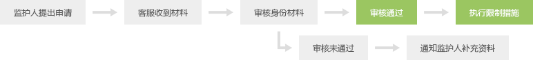

网络游戏未成年人家长监护工程”是由中华人民共和国文化部指导创建， 旨在加强家长对未成年人参与网络游戏的监护，引导未成年人健康、绿色参与网络游戏，和谐家庭关系的社会性公益行动。
“家长监护机制”是上海快之游网络平台在这一公益行动中，针对目前未成年人缺乏自控及自律能力，容易陷入沉迷； 少数监护人缺少时间照顾孩子，不能及时监督孩子游戏时间的现状，而推出的一种可由家长实施监控，纠正部分未成年子女沉迷游戏的保护机制。
申请流程：
1申请人需为被监护未成年人的法定监护人
2申请人的被监护人年龄<18周岁
3申请人需为大陆公民，不含港、澳、台人士
电话：021-50490882
1监护人信息表（包含监护人的身份证明复印件）
2被监护人信息表（包含被监护人所玩游戏相关信息及身份证明复印件）
3申请人与被监护人的监护关系证明文件（户口簿或有关机关出具的证明文件）
联系电话：021-50490882
此项服务是免费的，快之游会在对您提交的信息确认无误后，尽快处理。
网络游戏未成年人用户家长监控服务申请书、授权书并手工签字（需下载，填写并打印，签字，有关问题请直接联系客服）；
监护人信息表（包含监护人的身份证明复印件）；
被监护人信息表（包含被监护人所玩游戏相关信息及身份证明复印件）；
申请人与被监护人的监护关系证明文件（户口簿或有关机关出具的证明文件）；
上海市浦东新区蔡伦路1690号2号楼412室 请在信封注明：家长监护工程
为避免在处理过程中可能出现的问题，我们需要您提供与账号使用者必要的监护证明关系材料。
您可以提供一些辅助信息，如：IP地址、您被监护人登录游戏的时间点及时长、游戏角色级别、服务器、账号、角色名、游戏名称、职业、游戏截图、视频等。 建议您可以问一下周围熟悉的人或者朋友是否有玩游戏，请他们协助您获取一些信息，或者帮助了解一些信息，这样能够加快处理进程。
如果申请人提交资料中的申请人或被监护人的身份证号码与被监控账户注册信息中的身份证号码一致， 我们将按与您协商的结果对被监控账号立刻进行处理； 如申请人提交的资料中的申请人或被监护人的身份证号码与被监控账户注册信息中的身份证号码无任何关联， 为保障申请人的需求能够得到处理，以及账号使用人的利益，我们需要申请人补充提供相关的信息，以确定真实的账号。
为了避免给您和其他人带来一些不必要的困扰和麻烦。 我们会根据这些信息对账号的归属进行验证和判定，以确保为您服务的准确性。
根据监护人意愿屏蔽被监护未成年人相关游戏登录 根据监护人意愿， 在被监护未成年人登录指定游戏时，邮件通知监护人。
您可以通过拨打服务热线：021-50490882 进行查询。
我们在收到您的信息，审核后，会在收到信息的10个工作日之内与您取得联系， 对该服务进行说明，并明确告知是否需要您的后续配合。 待最终确定账号无误后，我们会在5个工作日内对账号进行监控。
您可以通过专线电话过传真方式联系客服申请解除监护，需提供申请监督时的相关信息； 被监护账号所属人年满18周岁可提供申请监护时的相关信息进行申请结束监护。
收件人：客服部
地 址：上海市浦东新区蔡伦路1690号2号楼412室
电话：021-50490882
1申请人应提交完备的申请材料，对未提供的信息要及时补充
2申请人应保证提交的信息真实有效；对于提供虚假信息或伪造证件，我司将保留进一步追究法律责任的权利。